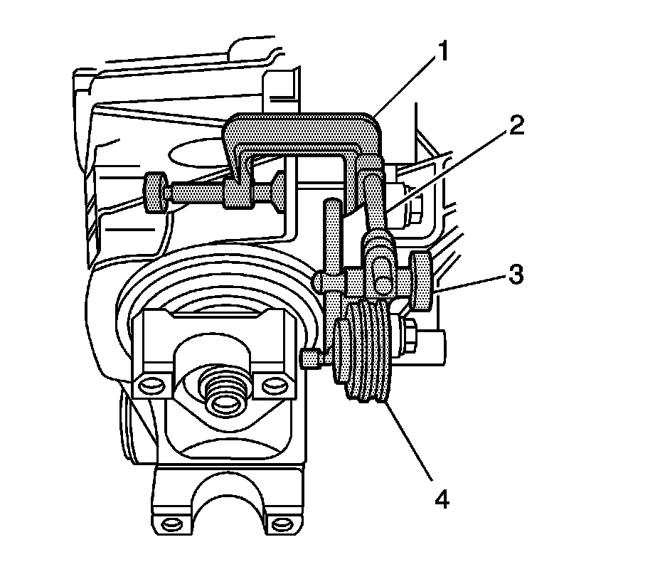

Backlash Inspection and Adjustment
Backlash Inspection and Adjustment
Tools Required
^ J 8001 Dial Indicator Set
^ J 36599-A Side Bearing Nut Wrench
^ J 36615 Side Bearing Nut Wrench
1. Remove all alignment marks made previously and re-mark the location of the differential adjuster nut sleeves in relation to the differential carrier assembly case halves.
Ensure that the notches can be counted when turned.

2. Install the J 8001-1 (1, 2), the J 8001-2 (3), and the J 8001-3 (4) as shown.
Ensure that the button contacts the outer edge of the pinion yoke and that the plunger is at a right angle to the pinion yoke.
3. Move the pinion yoke back and forth through the pinion yoke's free play while not allowing the ring gear to move.
4. Record the dial indicator reading.
5. To determine the actual backlash, divide the dial indicator reading by 2.
An actual dial indicator reading of 0.16 mm (0.006 in) means that there is actually 0.08 mm (0.003 in) backlash.
The backlash between the ring gear and the drive pinion should be between 0.08-0.25 mm (0.003-0.010 in) with a preferred specification of 0.13-0.18 mm (0.005-0.007 in).
Important: When adjusting the backlash, observe the following:
^ Always turn the left and the right differential adjuster nut sleeves in equal amounts.
^ Turning the differential adjuster nut sleeves one notch will change the backlash about 0.08 mm (0.003 in).
If the backlash is too small, increase the backlash by turning the right differential adjuster nut sleeve out one notch using the J 36599-A, 8.25 inch axle, or the J 36615, 9.25 inch axle, and the left differential adjuster nut sleeve in one notch using the J 36599-A until the correct backlash is obtained.
6. If the backlash is too large, decrease the backlash by turning the left differential adjuster nut sleeve out one notch using the J 36599-A and the right differential adjuster nut sleeve in one notch using the J 36599-A, 8.25 inch axle, or the J 36615, 9.25 inch axle, until the correct backlash is obtained.
7. Recheck the rotating torque of the pinion and differential assembly and adjust, if necessary. Refer to Differential Carrier Assembly Assemble.
8. Once the backlash and bearing preload is within specifications, remove the alignment markings and place new alignment marks between the differential bearing adjuster nut and the differential carrier assembly case.
9. Continue the assembly of the differential carrier. Refer to Differential Carrier Assembly Assemble.